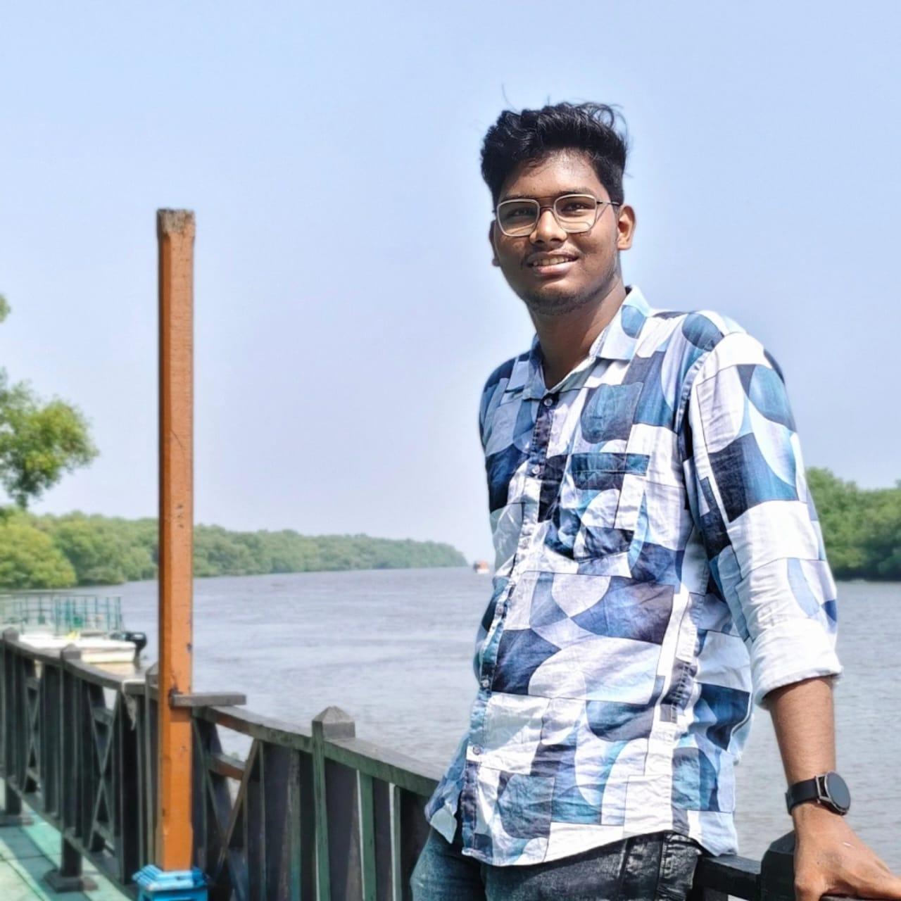

SIGNAL_01
2026 Graduate
B.Tech in Computer Science and Engineering, Srinivasa Institute of Engineering and Technology.

ABHI OLETI Open to opportunitiesSYSTEM STATUS / AVAILABLE
I am Abhi Oleti, a 2026 Computer Science Engineering graduate. I build responsive web interfaces and use data-driven thinking to turn practical ideas into working projects.
01 / PROFILE
I am interested in the part of development where structure meets usefulness: writing clean front-end experiences, exploring data, and steadily improving the way I solve problems.
My work so far combines responsive web development, an interest in both Java and Python, AI/ML learning, and a hackathon project that earned first prize. I’m looking for software opportunities where I can contribute, keep learning, and build useful solutions.
SIGNAL_01
B.Tech in Computer Science and Engineering, Srinivasa Institute of Engineering and Technology.
SIGNAL_02
Blackbucks Education, with structured training, practical assignments, and project-based learning.
SIGNAL_03
First Prize at TechMantra Now for the MES Portal, a collaborative web project.
02 / SELECTED WORK
Each project is a focused experiment in interface, structure, or insight.
Hackathon project
A responsive portal designed to make institutional information and services easier to access through a clear, user-focused web experience.
Machine learning exploration
An exploratory analysis of Uber trip data that uses clustering and visualisation to identify travel patterns, demand areas, and useful trends.
Front-end practice
A responsive YouTube-inspired interface built to practise information hierarchy, video-card layouts, navigation patterns, and mobile-friendly design.
03 / TIMELINE
LONG-TERM INTERNSHIP
Blackbucks Education Pvt. Ltd. - completed a 16-week program of structured AI/ML training, practical assignments, and project-based learning.
EDUCATION
Srinivasa Institute of Engineering and Technology, Amalapuram. CGPA: 7.49/10.
VIRTUAL INTERNSHIPS
AI/ML and Android Developer with Google; Cybersecurity with Palo Alto; Data Science with Altair.
04 / TOOLKIT
LANGUAGES
WEB
DATA + AI/ML
TOOLS